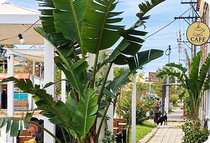
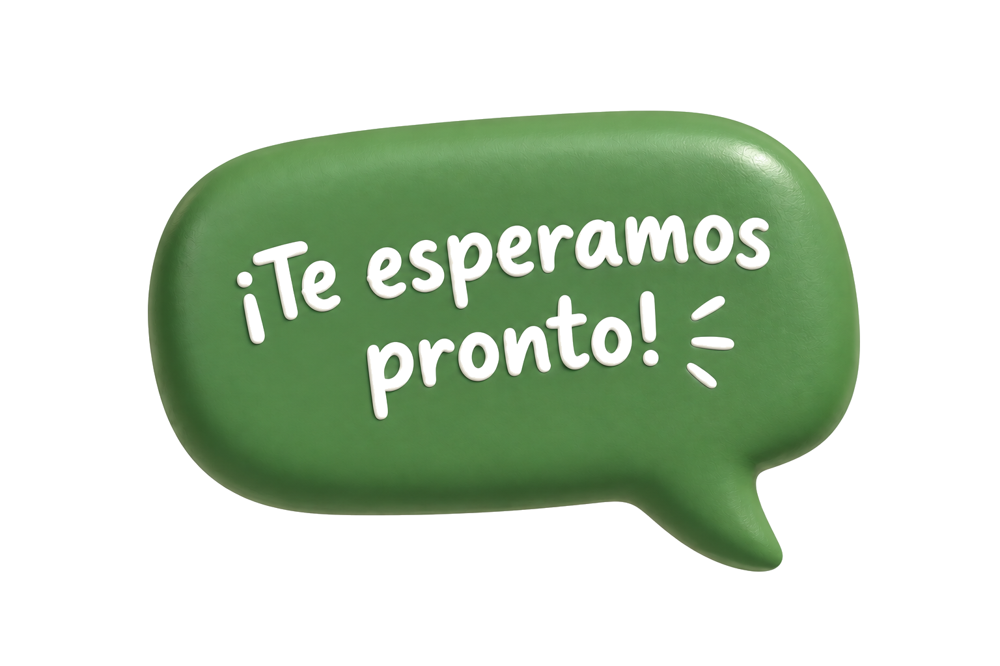

Si querés conocer más sobre Ibicuy, compartir información, fotografías o recuerdos sobre la historia de la localidad, podés ponerte en contacto.
Bva. 17 de Octubre y Av. San Martín.
En la entrada del pueblo
9:00 a 17:00 h
